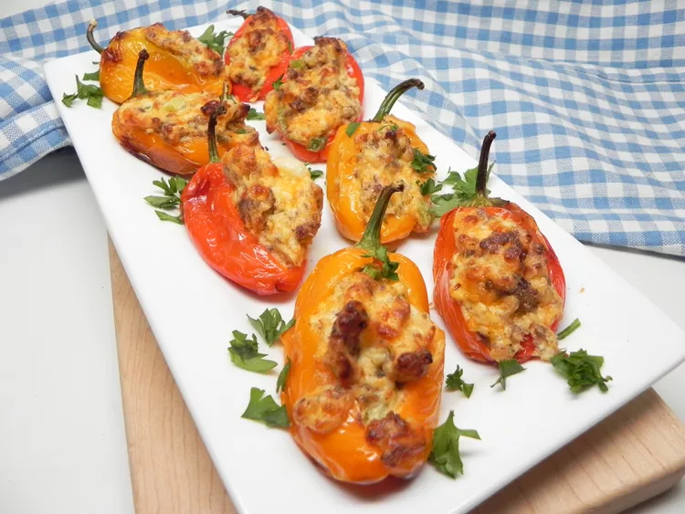

Air Fryer Mini Peppers Stuffed with Cheese and Sausage

Description
Whether it's a formal party at your home or a casual get-together with friends, these air-fried mini peppers stuffed with cheese and sausage are a great appetizer to offer.
Ingredients
- 8 ounces bulk Italian sausage
- 1 (16 ounce) package miniature multi-colored sweet peppers
- 2 tablespoons olive oil, divided
- 1 (8 ounce) package cream cheese, softened
- 1/2 cup shredded Cheddar cheese
- 2 tablespoons crumbled blue cheese (optional)
- 1 tablespoon finely chopped fresh chives
- 1 clove garlic, minced
- 1/4 teaspoon ground black pepper
- 2 tablespoons panko break crumbs
Directions
- Heat a large nonstick skillet over medium-high heat. Coook and stir sauage in the hot skillet until browned and crumbly, 5 to 7 minutes. Drain and discard grease; set aside.
- Preheat an air fryer to 350 degrees F (175 degrees C).
- Cut a slit in one side of eash sweet pepper lengthwise from stem to tip. Brush peppers with 1 tablespoon olive oil and place in the air fryer basket.
- Cool in the preheated air fryer for 3 minutes. Shake the basket and cook until peppers start to brown and soften, about 3 minutes more. Remove peppers and let stand until cool enough to handle; leave air fryer on.
- While peppers are cooling,stir together sausage, cream cheese, Cheddar cheese, blule cheese, chives, garlic and black pepper ina medium bowl until well combined. Mix bread crumbs with remaining 1 tablespoon olive oil in a small bowl.
- Spoon cheese mixture into each pepper and sprinkle with bread crumb mixture. Place stuffed peppers in the air fryer basket, working in batches if necessary, and cook until filling is heated through and bread crumbs are toasted, 4 to 5 minutes. Cool slightly; serve warm.